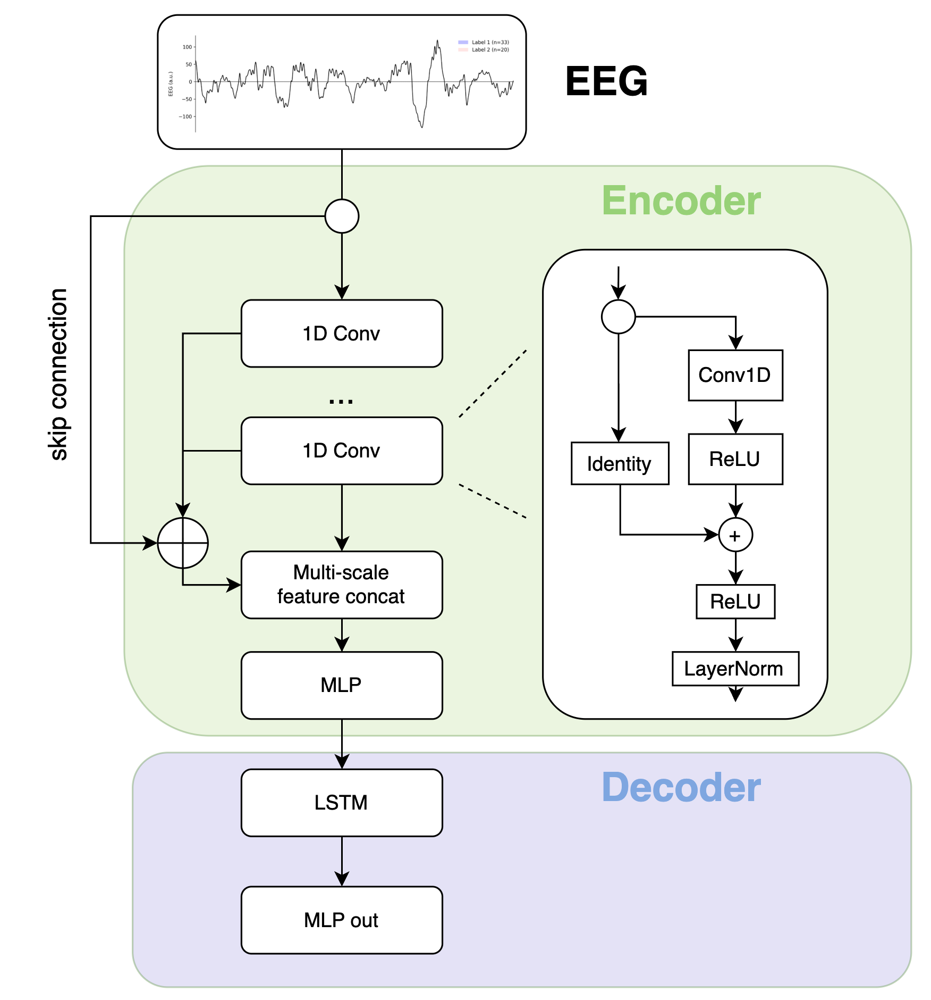
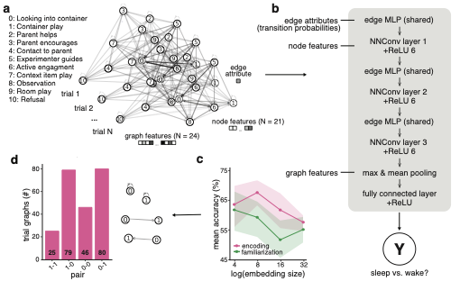
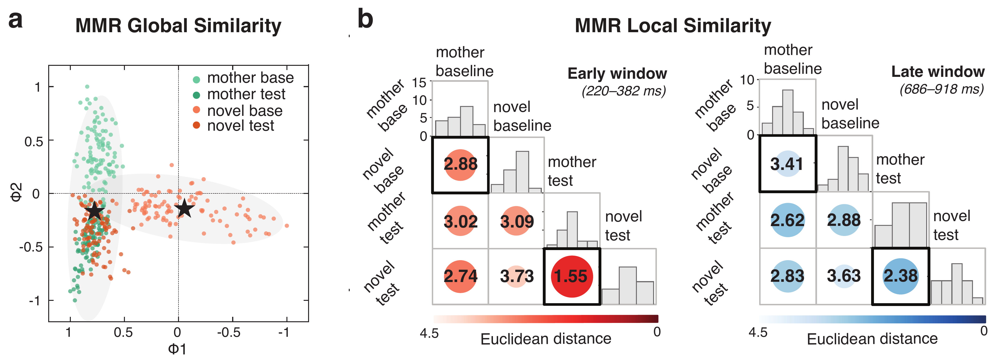
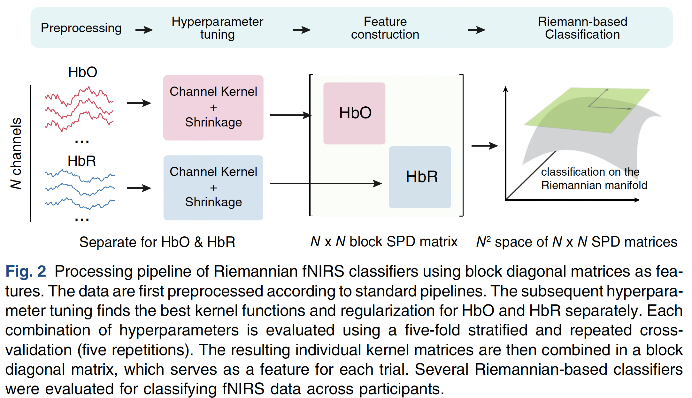
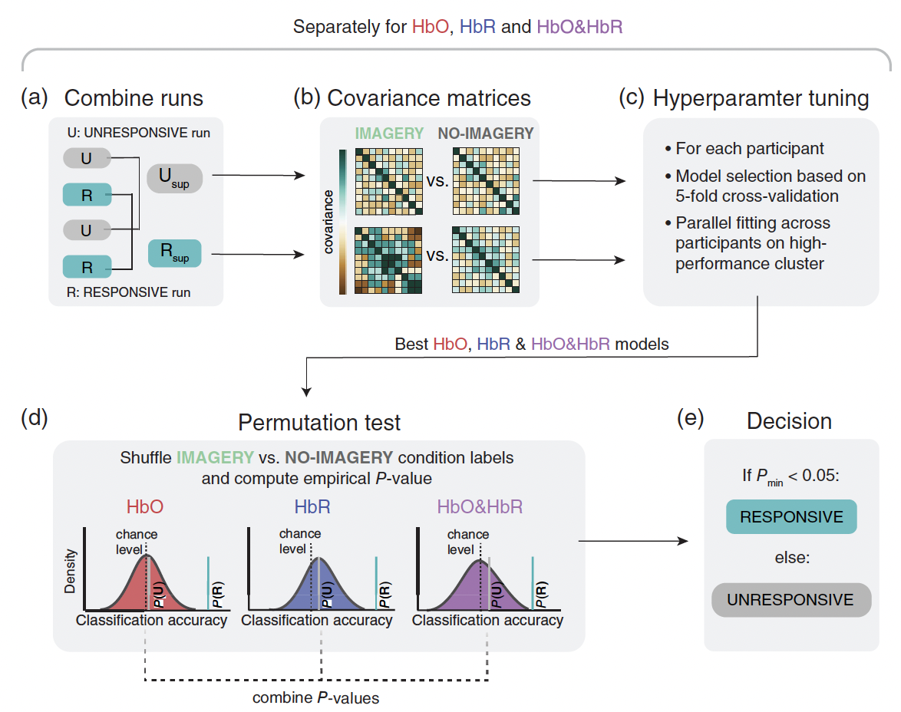

Biography
I’m a neuroscience PhD researcher at the University of Tübingen, currently finishing up my dissertation. I have worked with large-scale, noisy, non-stationary time-series data in the domains of sleep and behavioral neuroscience and brain-computer interfacing for clinical applications. I have a strong background in Python-based research pipelines, machine learning, and statistical modeling including methods like Riemannian geometry, graph neural networks, and real-time causal CNNs for low-latency inference.
My research has been featured on German national television as part of ZDF’s Terra X: MaiBrain documentary series with Mai Thi Nguyen-Kim in 2023, and on ARD’s Doc Fischer health science magazine in March 2026.
Last year, I spent time as a visiting researcher at Columbia University’s Engineering department in New York. I’m now relocating to NY and looking for industry roles as a Research Scientist in NeuroAI or as a (Clinical) Data Scientist. I love bridging the gap between neuroscience and modern ML, and I’m excited to bring that to a team working on hard, meaningful problems in a fast-paced environment.
News
- 2025 Presented SODEEP — a lightweight causal CNN for real-time slow oscillation detection at Society for Neuroscience.
- Jun 2025 Joined Columbia University (Engineering) as a visiting researcher.
- 2025 Four publications in Neurophotonics, Sleep Advances and Brain Stimulation.
Media
Featured Projects





Experience
- Applied advanced statistical and machine learning methods to large-scale, high-dimensional time-series datasets to extract predictive signals
- Extensive experience with millisecond resolution time series and corresponding predictive models
- Designed and validated quantitative models for pattern detection and forecasting under noisy, non-stationary conditions
- Built end-to-end data pipelines for ingestion, cleaning, feature engineering, and analysis of multimodal datasets using Python and R
- Built real-time high-frequency time series models for short-horizon prediction
- Engaged in collaborative research projects, contributing expertise in neuroscience and open-source toolbox development in Python
- Applied advanced analytical techniques to support ongoing studies and experimental designs
- Conducted Master's thesis on multimodal neuroscience datasets, leveraging statistical analysis to derive highly cited findings
- Gained practical experience in experimental design and quantitative data analysis
- Completed a structured professional training program in banking and financial markets within a regulated European financial institution
- Analyzed client portfolios, cash flows, and risk profiles; supported allocation decisions across equities, fixed income, and structured products
- Developed early exposure to market microstructure, order execution, and regulatory constraints in liquid equity markets
Education
Peer Review
Reviewed for Neuron, Nature Communications, PNAS, Communications Biology, Cell Reports, Journal of Neuroscience, Brain Stimulation, Neurophotonics, PLOS Biology, Neurobiology of Learning and Memory, and Appetite.